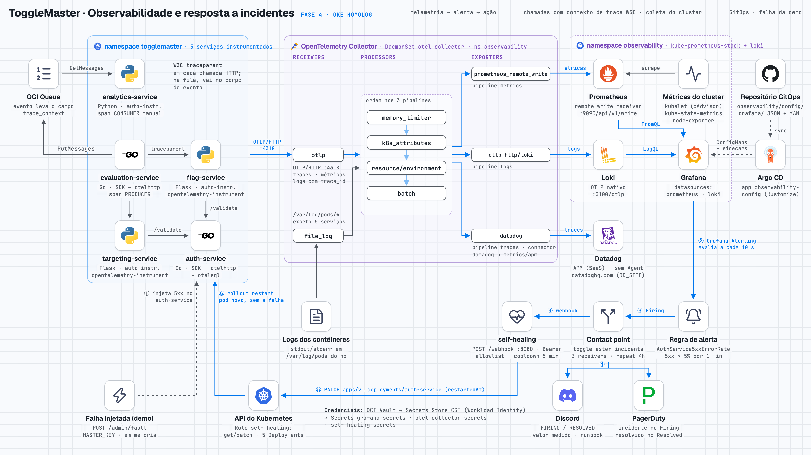
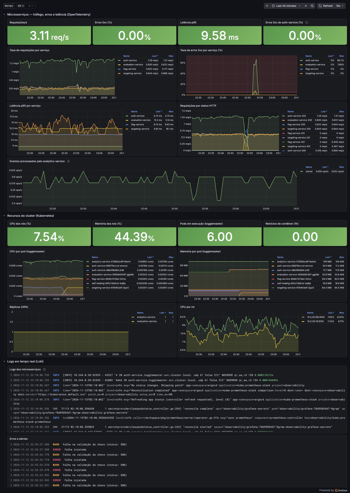
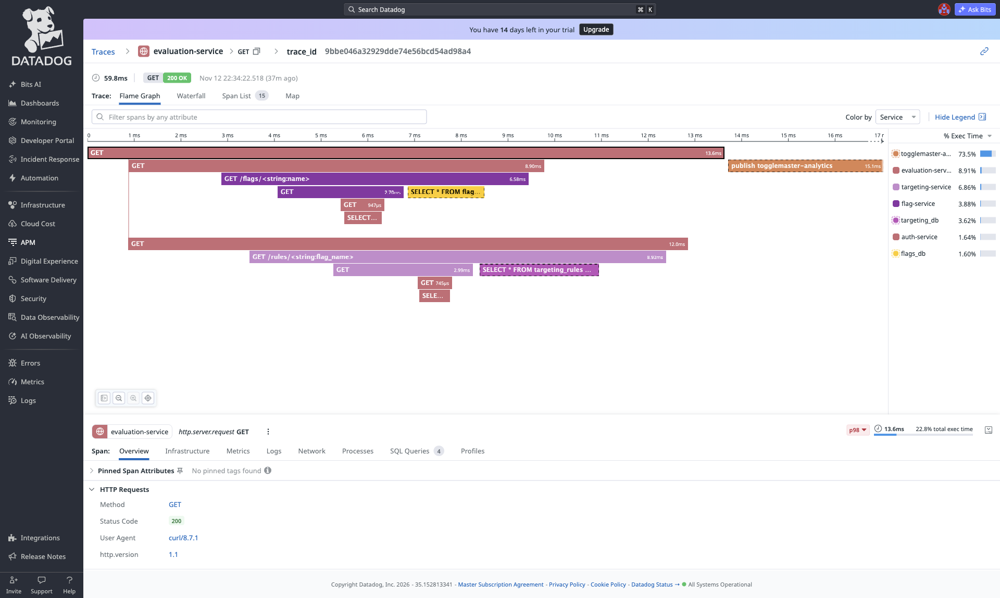
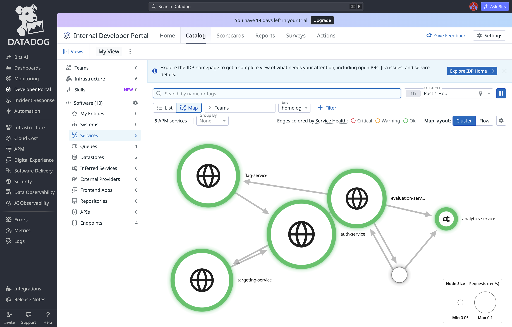
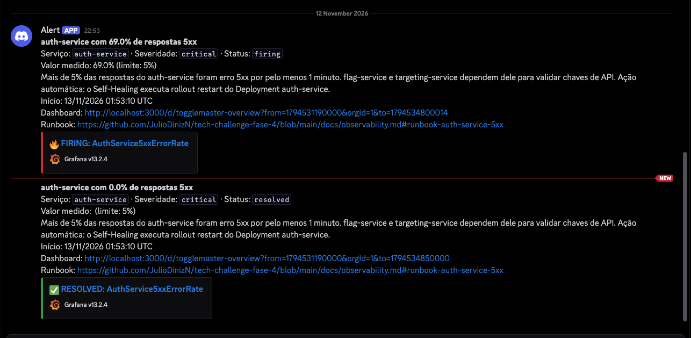
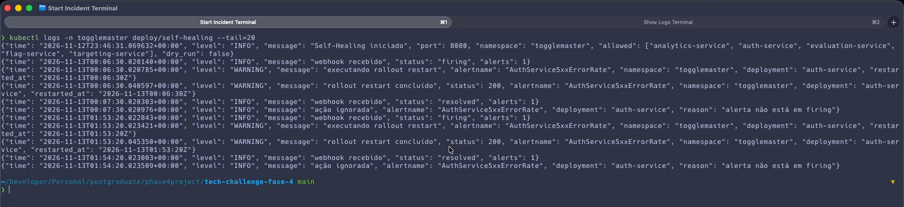

ToggleMaster
Integrantes
| Nome completo | Matrícula | Usuário |
|---|---|---|
| Julio Cesar Diniz Nogueira | RM373719 | JulioDinizN |
1. Acesso aos entregáveis
- Repositório principal — código, instrumentação, CI e infraestrutura
- Repositório GitOps — estado desejado do Kubernetes e stack de observabilidade
- Documentação técnica
Vídeo de demonstração (20min05s): https://drive.google.com/drive/folders/15-CMmU3onMTld9xLVTTpMwazbzAwOhKI?usp=sharing (arquivo togglemaster-fase4-demo.mp4).
2. Arquitetura de observabilidade
O cluster Kubernetes é o OKE, da Oracle Cloud (OCI), usado no lugar do EKS citado no enunciado. A substituição de provedor foi aceita pela disciplina nas fases anteriores e vale para toda a base: Terraform, CI/CD, GitOps com Argo CD e os serviços gerenciados.
Os cinco microsserviços usam as bibliotecas do OpenTelemetry: SDK em Go no auth-service e no evaluation-service, instrumentação automática em Python (opentelemetry-instrument no Dockerfile) no flag-service, no targeting-service e no analytics-service. Nenhum serviço conhece Prometheus, Loki ou o APM: todos enviam métricas, logs e traces por OTLP/HTTP para o OpenTelemetry Collector, que roda como DaemonSet no namespace observability.
O Collector é a peça central. Recebe OTLP dos serviços e lê os logs de todos os demais contêineres do cluster (file_log), enriquece tudo com metadados do Kubernetes (k8s_attributes) e roteia por três pipelines:
| Sinal | Exporter do Collector | Destino |
|---|---|---|
| Métricas | prometheus_remote_write | Prometheus, que também coleta kubelet, kube-state-metrics e node-exporter |
| Logs | otlp_http/loki | Loki (ingestão OTLP nativa) |
| Traces | datadog, com o connector datadog/connector para as estatísticas de APM | Datadog (Distributed Tracing e Service Map) |
O contexto de trace W3C (traceparent) acompanha as chamadas HTTP do evaluation-service para flag-service e targeting-service, e destes para o auth-service. Na fila, o evaluation-service grava o contexto no campo trace_context do evento e o analytics-service continua o mesmo trace ao consumir, o que coloca os cinco serviços no Service Map.
O Grafana lê Prometheus e Loki. Dashboard, regra de alerta e contact points são arquivos versionados no repositório GitOps, carregados por sidecars. A regra AuthService5xxErrorRate (5xx do auth-service acima de 5% por 1 minuto) aciona um contact point com três destinos: incidente no PagerDuty, mensagem no Discord e o webhook do Self-Healing, que executa o equivalente a kubectl rollout restart deployment/auth-service pela API do Kubernetes.
Toda a stack (kube-prometheus-stack, Loki e OpenTelemetry Collector) é instalada pelo Argo CD a partir de charts Helm com versão fixa no repositório GitOps. As credenciais externas ficam no OCI Vault e chegam aos pods por Secrets Store CSI e Workload Identity.

3. Justificativa técnica
OpenTelemetry Collector como peça central
Com o Collector no meio, os serviços dependem só do padrão OTLP. Trocar ou acrescentar um backend, inclusive o APM, muda um exporter na configuração do Collector, sem alterar código nem reconstruir imagens. O Collector também resolve em um único ponto a coleta dos logs de todos os contêineres e a adição de metadados do Kubernetes. Usamos o OTel Collector padrão; o Grafana Alloy era opcional.
APM: Datadog em vez de New Relic
Escolhemos o Datadog pelo APM: o Service Map é montado a partir dos spans e mostra as dependências entre os serviços, e o trace distribuído traz cada chamada HTTP e cada consulta SQL como um recurso com tempo próprio. O Collector envia os traces pelo exporter datadog, e o connector datadog calcula as estatísticas de APM (taxa, erros e latência por serviço e recurso) a partir dos mesmos spans. Não há Datadog Agent nos nós nem biblioteca proprietária nos serviços, que continuam só com OpenTelemetry.
O New Relic também atenderia e receberia os traces por um exporter OTLP genérico; o Datadog pede exporter e connector próprios. Aceitamos esse acoplamento porque ele fica isolado em um arquivo de configuração do Collector: trocar de APM continua sendo trocar um exporter, sem alterar código nem reconstruir imagens.
Gestão de incidentes: PagerDuty em vez de OpsGenie
O Grafana Alerting tem integração nativa com o PagerDuty pela Events API v2: o incidente é aberto quando o alerta entra em Firing e resolvido quando volta ao normal, sem código intermediário. A Atlassian anunciou o encerramento do OpsGenie e deixou de aceitar novos clientes, portanto não faz sentido adotá-lo em um projeto novo.
Self-Healing dentro do cluster
A automação é um receptor de webhook que roda no próprio cluster (services/self-healing) e é chamado pelo alerta. A API do OKE só aceita os CIDRs autorizados, então uma função externa ou um runner hospedado do GitHub não alcançariam o cluster sem expor credenciais. O receptor usa uma ServiceAccount cujo Role permite apenas get e patch nos cinco Deployments dos serviços, valida um token do Vault, só age em Deployments de uma lista permitida e aplica um intervalo mínimo de 5 minutos entre reinícios.
4. Evidências
Capturas feitas em 12/11/2026 no ambiente de homologação (cluster OKE togglemaster-oke), durante a gravação do vídeo. O incidente foi provocado injetando falha no auth-service; o alerta disparou às 01:53:10 UTC e foi resolvido às 01:54:20 UTC.
4.1 Dashboard customizado no Grafana

4.2 Trace distribuído no APM (Datadog)

GET /evaluate: 15 spans passando por evaluation-service, flag-service, targeting-service, auth-service, os bancos de dados e a fila até o analytics-service.
homolog com os cinco microsserviços e a fila.4.3 Notificação de incidente no ChatOps (Discord)

4.4 Execução da automação de Self-Healing

kubectl logs deploy/self-healing: webhook recebido com status firing, rollout restart do auth-service concluído com status 200 e, um minuto depois, o webhook de resolução.Trecho do mesmo log, em texto, referente ao incidente da gravação:
{"time": "2026-11-13T01:53:20.022843+00:00", "level": "INFO", "message": "webhook recebido", "status": "firing", "alerts": 1}
{"time": "2026-11-13T01:53:20.023421+00:00", "level": "WARNING", "message": "executando rollout restart", "alertname": "AuthService5xxErrorRate", "namespace": "togglemaster", "deployment": "auth-service", "restarted_at": "2026-11-13T01:53:20Z"}
{"time": "2026-11-13T01:53:20.045350+00:00", "level": "WARNING", "message": "rollout restart concluído", "status": 200, "alertname": "AuthService5xxErrorRate", "namespace": "togglemaster", "deployment": "auth-service", "restarted_at": "2026-11-13T01:53:20Z"}
{"time": "2026-11-13T01:54:20.023003+00:00", "level": "INFO", "message": "webhook recebido", "status": "resolved", "alerts": 1}
{"time": "2026-11-13T01:54:20.023509+00:00", "level": "INFO", "message": "ação ignorada", "alertname": "AuthService5xxErrorRate", "deployment": "auth-service", "reason": "alerta não está em firing"}